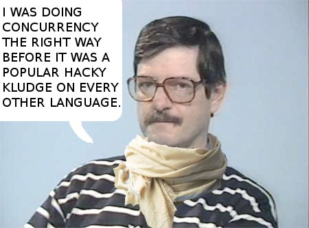

.left-column[ ## BEAM ### - Languages ] .right-column.center[ ``` +---------------------------------------------------------+ | Strong | | | | | | | | Elixir | C# | | Erlang | F# | | Clojure | Java | | Python | Scala | | Ruby | Haskell | | Groovy | | | | | | | | |Dynamic---------------------+----------------------Static| | | | | | | | | | | Perl | | | PHP | C | | VB | C++ | | JavaScript | | | | | | | | | | | | Weak | +---------------------------------------------------------+ ``` ] --- .left-column[ ## BEAM ### - Languages ] .right-column[  *Erlang started life as a Prolog interpreter and has always had a dynamic type system, and for a long time various heroic attempts have been made to add a type system to Erlang.* [(c) Joe Armstrong](http://webcem01.cem.itesm.mx:8005/erlang/cd/downloads/hopl_erlang.pdf) ] --- name: beam-langs .left-column[ ## BEAM ### - Languages ] .right-column[ - erlang (1985) strong / dynamic types - elixir (2011) strong / dynamic types - [other 20+](https://github.com/llaisdy/beam_languages) dead or alive **dynamic** typed languages ] --- template: beam-langs .center[ **Dynamic typing is ...** ] --- template: beam-langs .center[ **Dynamic typing is pain** ] .right-column.center[ <img src="img/dynamic-typing-meme.jpeg" width="88%"> ] --- .left-column[ ## BEAM ### - Languages ### - Static-Typed ] .right-column.center[ ##### Radical solution - choose other language <img src="img/elm-logo.png" width="50%"> <img src="img/alpaca-logo.png" width="50%"> ] --- .left-column[ ## BEAM ### - Languages ### - Static-Typed ### - Elchemy ] .right-column[ #### [elchemy](https://wende.github.io/elchemy/) (elixir way) - founded by [wende](https://github.com/wende) - since 2017 #### advantages - subset of elm (haskell) - Hindley–Milner type system (type inference etc) - generates readable elixir source code #### disadvantages - language is pretty raw (no OTP goodies etc) - maintained by only one person - haskell-like currying in [generated code](https://wende.github.io/elchemy-ivy/calling-elchemy.html) - FFI is required for calling Elixir / Erlang code - meta-programming is not supported ] --- .left-column[ ## BEAM ### - Languages ### - Static-Typed ### - Elchemy ### - Alpaca ] .right-column[ #### [alpaca](https://github.com/alpaca-lang) (erlang way) - since 2016 - syntax somewhere between OCaml and Elm #### advantages - Hindley–Milner type system - type inferencer with ADTs - erlang-like pattern matching - maintained by [**Askuity Inc**](http://www.erlang-factory.com/sfbay2017/jeremy-pierre.html) company - **typed messages** (!) #### disadvantages - language is pretty raw (no OTP goodies etc) - FFI is required for calling Elixir / Erlang code - meta-programming is not supported ] --- class: center, middle # Thanks [back to index](index.html)